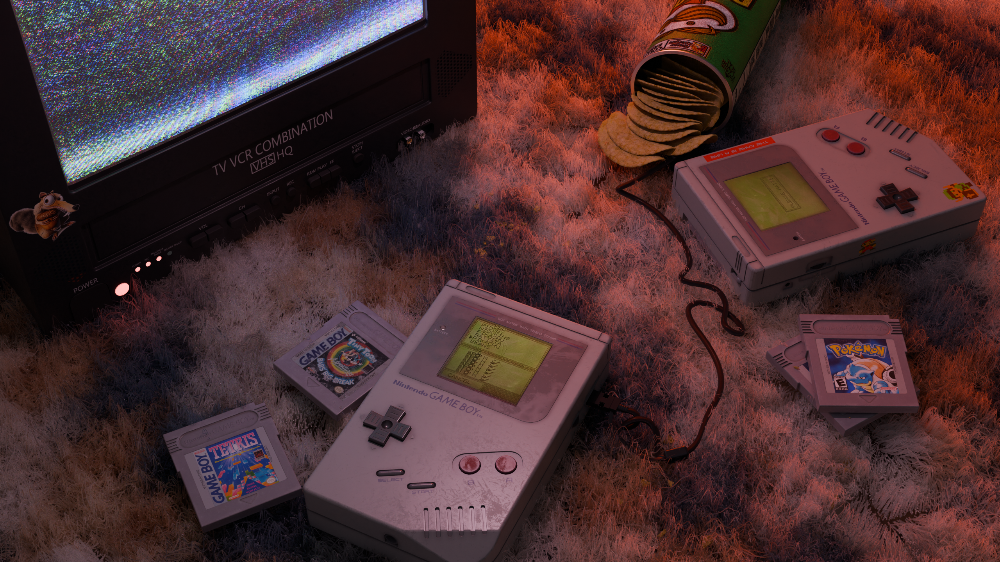
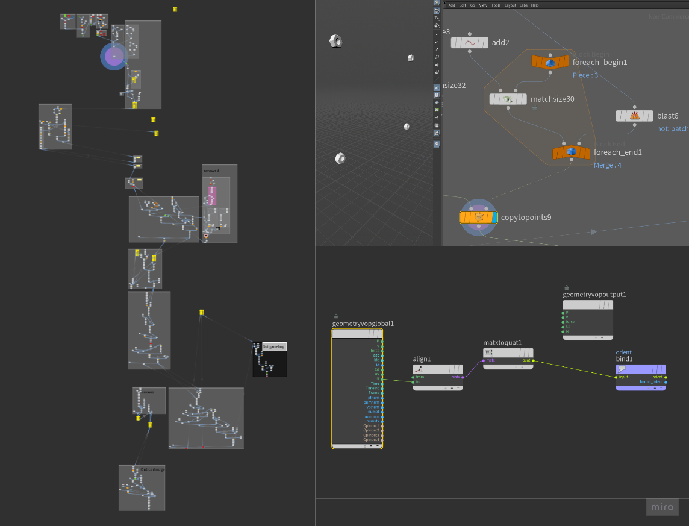
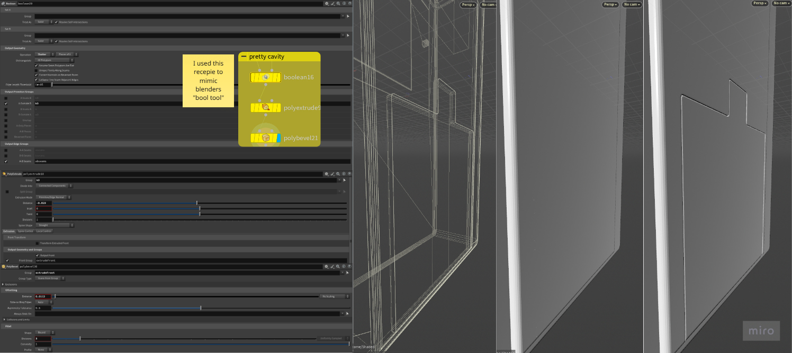
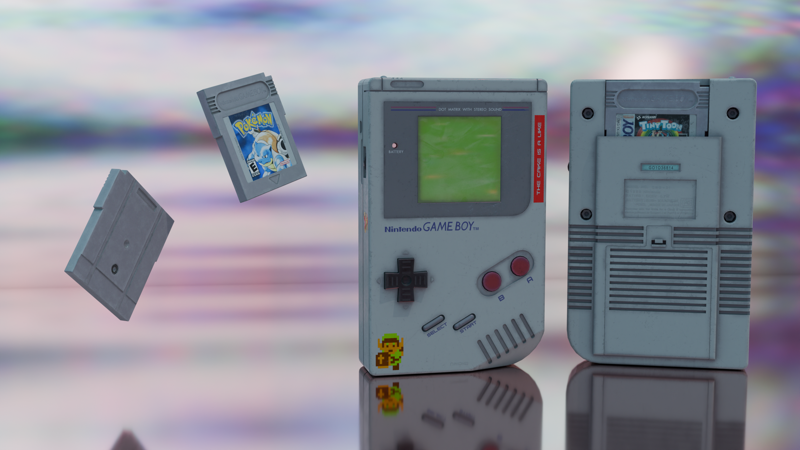

Rendered in Blender with 1000 samples and denoising enabled, this scene was built using Cycles for realistic lighting and smooth shading. Bathed in a warm, sunrise glow, I aimed to capture that early 2000s vibe. A nostalgic memory of waking up as a kid, eager for one thing: to play games.
The game boy was modelled in Houdini using a procedural approach, allowing for easy adjustments and variations during the modelling phase. The model features a detailed front and back. I originally intended to do this gameboy in Blender, but the booltool completely corrupted my model in the end where the asset was beyond repair. And I didn't have a backup. So I restarted in houdini where I did incremental saves instead.


I really did miss the booltool in blender which made pretty cavity, so I did a similiar node approach where I got similiar results with these nodes.
Front and back render of the gameboy model.
